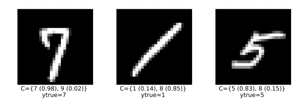

How to Conformalize a Deep Learning Image Classifier
Deep Learning is popular and — for some tasks like image classification — remarkably powerful. But it is also well-known that Deep Neural Networks (DNN) can be unstable (Goodfellow, Shlens, and Szegedy 2014) and poorly calibrated. Conformal Prediction can be used to mitigate these pitfalls. This how-to guide demonstrates how you can build an image classifier in Flux.jl and conformalize its predictions.
The Task at Hand
The task at hand is to predict the labels of handwritten images of digits using the famous MNIST dataset (LeCun 1998). Importing this popular machine learning dataset in Julia is made remarkably easy through MLDatasets.jl:
using MLDatasets
N = 1000
Xraw, yraw = MNIST(split=:train)[:]
Xraw = Xraw[:,:,1:N]
yraw = yraw[1:N]The chart below shows a few random samples from the training data:
using MLJ
using Images
X = map(x -> convert2image(MNIST, x), eachslice(Xraw, dims=3))
y = coerce(yraw, Multiclass)
n_samples = 10
mosaic(rand(X, n_samples)..., ncol=n_samples)
Building the Network
To model the mapping from image inputs to labels will rely on a simple Multi-Layer Perceptron (MLP). A great Julia library for Deep Learning is Flux.jl. But wait … doesn’t ConformalPrediction.jl work with models trained in MLJ.jl? That’s right, but fortunately there exists a Flux.jl interface to MLJ.jl, namely MLJFlux.jl. The interface is still in its early stages, but already very powerful and easily accessible for anyone (like myself) who is used to building Neural Networks in Flux.jl.
In Flux.jl, you could build an MLP for this task as follows,
using Flux
mlp = Chain(
Flux.flatten,
Dense(prod((28,28)), 32, relu),
Dense(32, 10)
)where (28,28) is just the input dimension (28x28 pixel images). Since we have ten digits, our output dimension is ten.[1]
We can do the exact same thing in MLJFlux.jl as follows,
using MLJFlux
builder = MLJFlux.@builder Chain(
Flux.flatten,
Dense(prod(n_in), 32, relu),
Dense(32, n_out)
)where here we rely on the @builder macro to make the transition from Flux.jl to MLJ.jl as seamless as possible. Finally, MLJFlux.jl already comes with a number of helper functions to define plain-vanilla networks. In this case, we will use the ImageClassifier with our custom builder and cross-entropy loss:
ImageClassifier = @load ImageClassifier
clf = ImageClassifier(
builder=builder,
epochs=10,
loss=Flux.crossentropy
)The generated instance clf is a model (in the MLJ.jl sense) so from this point on we can rely on standard MLJ.jl workflows. For example, we can wrap our model in data to create a machine and then evaluate it on a holdout set as follows:
mach = machine(clf, X, y)
evaluate!(
mach,
resampling=Holdout(rng=123, fraction_train=0.8),
operation=predict_mode,
measure=[accuracy]
)The accuracy of our very simple model is not amazing, but good enough for the purpose of this tutorial. For each image, our MLP returns a softmax output for each possible digit: 0,1,2,3,…,9. Since each individual softmax output is valued between zero and one, y(k) ∈ (0,1), this is commonly interpreted as a probability: y(k) ≔ p(y=k|X). Edge cases – that is values close to either zero or one - indicate high predictive certainty. But this is only a heuristic notion of predictive uncertainty (Angelopoulos and Bates 2021). Next, we will turn this heuristic notion of uncertainty into a rigorous one using Conformal Prediction.
Conformalizing the Network
Since clf is a model, it is also compatible with our package: ConformalPrediction.jl. To conformalize our MLP, we therefore only need to call conformal_model(clf). Since the generated instance conf_model is also just a model, we can still rely on standard MLJ.jl workflows. Below we first wrap it in data and then fit it. Aaaand … we’re done! Let’s look at the results in the next section.
using ConformalPrediction
conf_model = conformal_model(clf)
mach = machine(conf_model, X, y)
fit!(mach)Results
The charts below present the results. The first row displays highly certain predictions, now defined in the rigorous sense of Conformal Prediction: in each case, the conformal set (just beneath the image) includes only one label. The following two rows display increasingly uncertain predictions of set size two and three, respectively. For example, the conformal set for the center image in the bottom row includes both y = 1 and y = 2, which seems plausible: there genuinely is some ambiguity even from the perspective of a human inspector.
display(plot_results(mach, X, y; set_size=1))
display(plot_results(mach, X, y; set_size=2))
display(plot_results(mach, X, y; set_size=3))


Conformalised predictions from an image classifier.
As always, we can also evaluate our conformal model in terms of coverage (correctness) and conditional coverage (adaptiveness).
_eval = evaluate!(
mach,
resampling=Holdout(rng=123, fraction_train=0.8),
operation=predict,
measure=[emp_coverage, ssc]
)
println("Empirical coverage: $(round(_eval.measurement[1], digits=3))")
println("SSC: $(round(_eval.measurement[2], digits=3))")References
Angelopoulos, Anastasios N., and Stephen Bates. 2021. “A Gentle Introduction to Conformal Prediction and Distribution-Free Uncertainty Quantification.” https://arxiv.org/abs/2107.07511.
Goodfellow, Ian J, Jonathon Shlens, and Christian Szegedy. 2014. “Explaining and Harnessing Adversarial Examples.” https://arxiv.org/abs/1412.6572.
LeCun, Yann. 1998. “The MNIST Database of Handwritten Digits.”
[1] For a full tutorial on how to build an MNIST image classifier relying solely on Flux.jl, check out this tutorial.